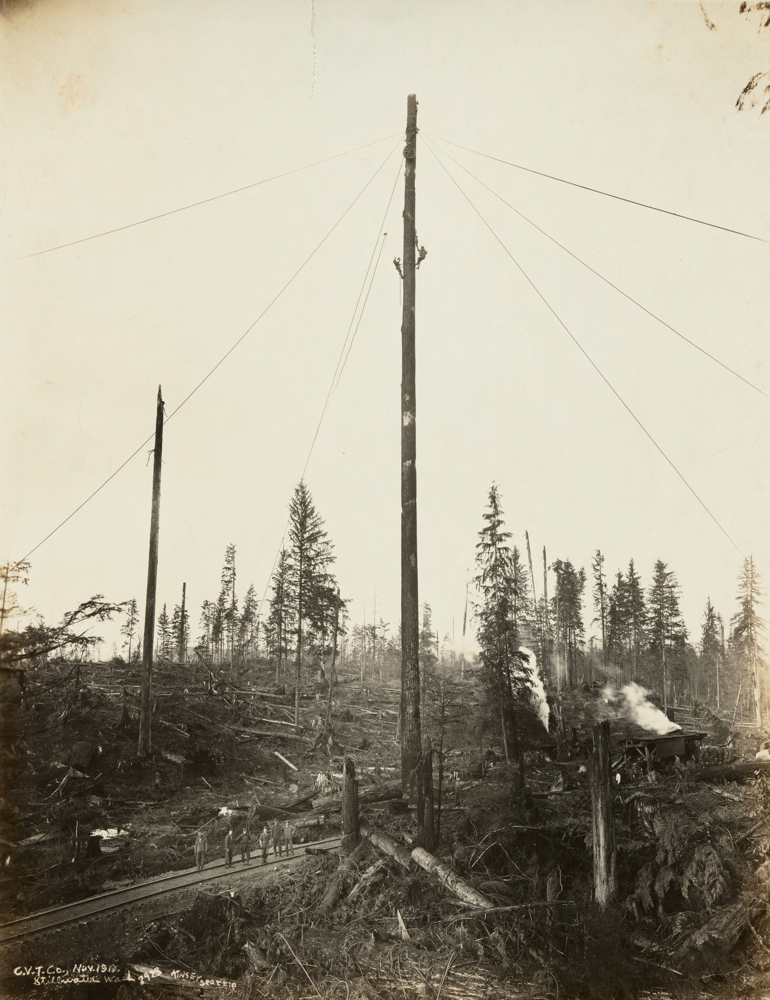
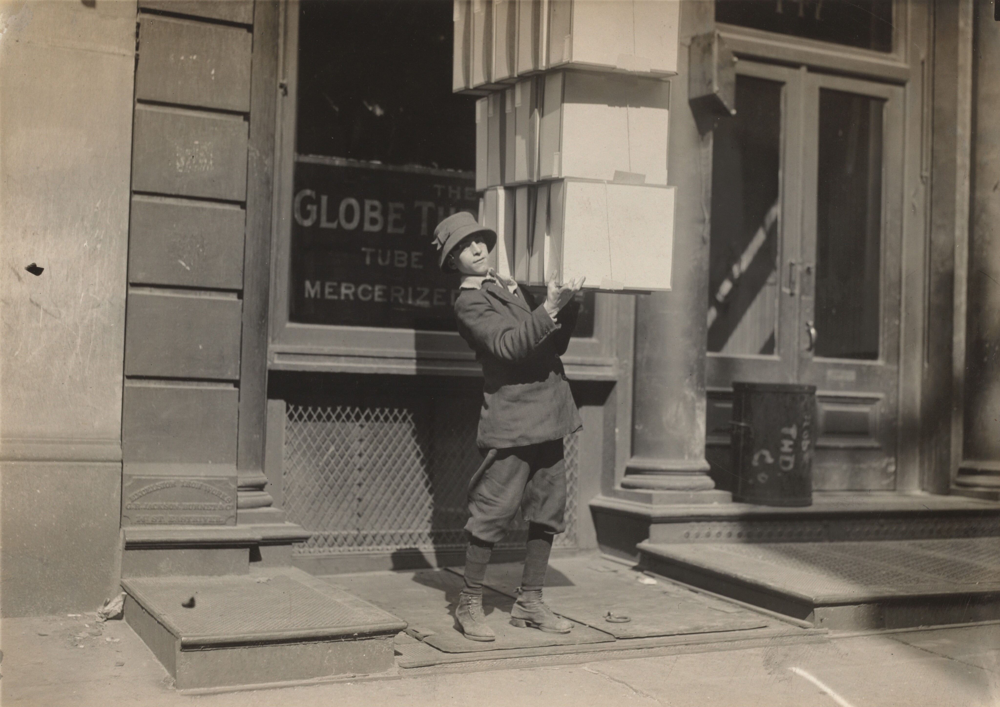
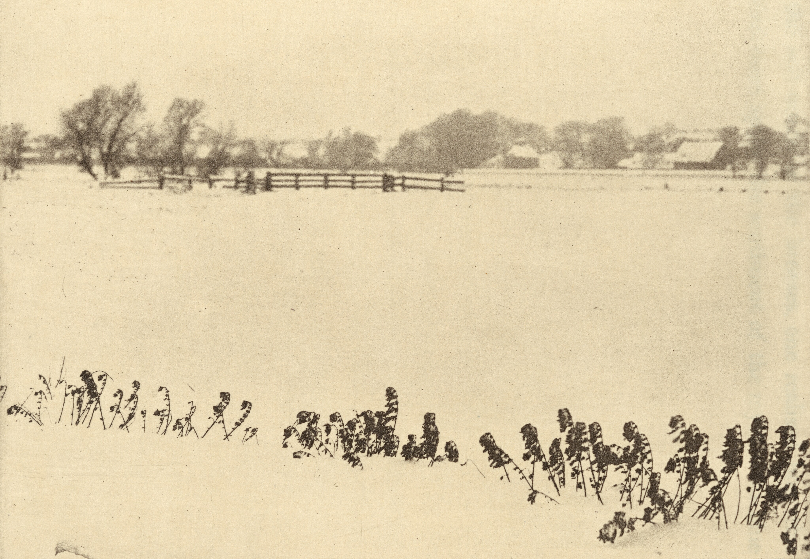

TITLE 101
IN THE BLACK OF THE DARK OF THE DAYS,
Jelinek, McCarthy, Feigenbaum WERE AROUND,
PERPLEXED BY THE DYNAMICS OF THE CLEVEREST OF THE METHODS,
Jozefowicz as well? chains of the chains of the vanished of the rain!.
And the hidden states sad because of the previous path,
Eigenvectors eigenvalues everywhere, I am telling you, do not look back!
The effects of the radiation are too near, I am yelling at you, escape far away from here,
And explodes, I take 8-grams and suddenly everybody start to cry.
My dear Mom is in the most nearest of the stations, I am telling you, we are coming back to home again.
Clipping in the air I remember wise words of the most of the childest of the game,
I have a huge intuition of never ever fly next to the Wildest of the theorems.
I salute alex through the window with the kindest of the terms,
Guess what? The Macchina think I am flying yet again, but I do not forget,
All this happened in the darkest of the black of the days of the nights,
While modifying the most famous of the gauss-bonnet theorem.
Speaking of the Cell that was for granted the most trashy think you could ever sell.
Meaning, leaving through the gates
TITLE 102
Y una mosca se sentó sobre mi persona,
Es decir, muchas moscas y estoy vivo,
Pero el forense, me mira y toma fotos,
Pero soy un niño, el de las zapatillas rotas,
Ya lo mencioné,
Escuchar bien usted, cubramos el cuerpo,
El público no lo puede ver, misión clasificada.
Reportemoslo a la gran de la policía o a nadie tal ves.
Hay que ver,
-No mal interpretar, todo eso me lo mencionó la mosca,
Debo ser más explícito al parecer,
Solo son ideas,
Ideas del mismo Chile que siempre recorrer.
Sincerely,
None
TITLE 103

Son las miradas,
El remolino de puertas,
Cuidado! El remolino da vueltas
Cerca de Santiago cósmico.
Santiago apresurado,
Ocupado, Derivado, Sgto. Almacenado.
Santiago físico incurrido,
Sgto. ¿Quién te ha confabulado?
Estático y pasajero
Mi Santiago turbulento abrazador,
Blanco, Negro, Ay! Pálido Santiago,
Olas y holas fueron las que presencié.
Es doña Javiera corazones,
Tremendo latido olímpico
Mas flor que una rosa,
Se trataba de un terremoto radiactivo.
Por aquí esto es natural,
Estoy sorprendido, tan natural
Destartalada magnitud celestial,
Pasase por la puerta cristalina.
La libreta, las teclas, el sonido,
ya lo he visto todo,
¿Quién conocerá su próximo movimiento?
Estoy en medio, dando vueltas, de camino a la luna.
TITLE 104
Estoy tomando notas,
Pero mareado,
Estoy estudiando,
Pero mi corazón parece haberse estrellado.
Es lo que escribí,
Antes de que mi compañero interruptor interrumpir -in -tin,
Let's go in, Log in,
Eran teorías clásicas, TCP, RR, Trc, No sé, mi niño, -hay que comer.
Flip-flop, el buffer, buffets de buffetes, -tomo notas,
Y vì como mi cuerpo se encañamaba,
Los cañamos de esferas del campo del abuelo,
De los cientos de millones de trigos que hay aquí.
-Quédate aquì, niño, no escapes, -tomo notas,
Adams no lo vio, Nash para que decir,
Eran los ataques, ataques de mi madre que siempre percibir,
ay! --tomo notas--, parece que me voy volando y mi niño persistir.
Hoy en un día feliz, mi país feliz, ya te dije, Todos felices.
¿Porqué las personas piensan lo que piensan? -Baker(PrizeNobel)
No lo sé, ¿Por qué lo piensan? Me lo dicen,
Me, Yo no sé, ellos me lo contaron en lo más profundo de su ser.
-tomo notas,
Somos amigos
System? An ordered abastraction of the unordered world in itself. For thou the components could be manipulated and to manipulate such components as well in itself.
We identified the raw emotions that lead to poetic creation.
We discovered the moments where poetry can heal and inspire change.
We connected past experiences with present expressions, seeking universal truths.
We realized the impact of silence and sound in crafting meaningful verses.
We